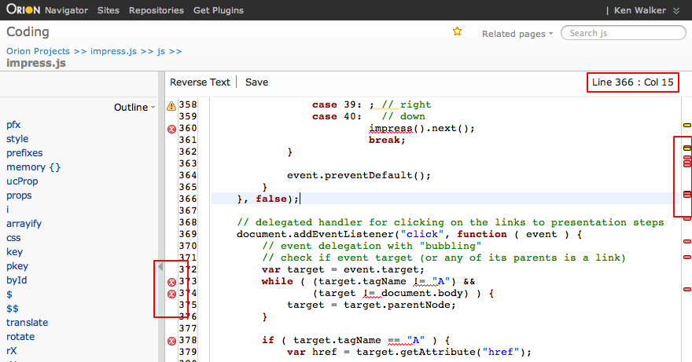

Navigate to the Coding page by clicking any file in the Navigator page that has a corresponding Orion editor. This page is comprised mainly of an editor area, and a collapsible outline section on the left hand side. Click a function or field name in the outline to scroll the editor to that declaration. Error markers are shown in the gutter to the left of the line numbers, and a birds-eye view of errors is shown next to the scroll bar on the right. The name of the file being edited, and the current line and column information are shown in the title area at the top of the page.

The editor supports many of the typical key bindings from the Eclipse editor. To find out what key bindings are available, type Ctrl+Shift+L.
Basic content assist is currently supported in JavaScript and CSS files. Other file types may be supported depending on what plugins you have installed. Type Ctrl+Space to open content assist at the current cursor position in the editor.
There are several ways to perform searches in the editor:
This document is maintained in a collaborative wiki. If you wish to update or modify this document please visit http://wiki.eclipse.org/Orion/Documentation/User_Guide/Reference/Coding_page